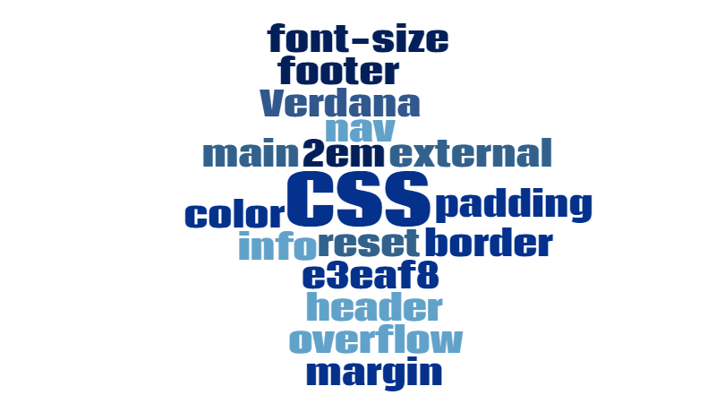

W3C CSS Working Group
CSS Working Group
The CSS Working Group, part of the W3C, sets the standards for CSS. The group meets on a regular basis to update the standards. Many of these documents are known as working drafts.
Instead of releasing CSS versions, such as CSS 1 and 2, the group has changed its approach for CSS updates. The CSS Working Group has broken CSS into modules to define parts of CSS. The group now publishes CSS Snapshots, which include the latest updates to CSS. The group intends to publish these snapshots every one to two years. The latest CSS Snapshot is CSS Snapshot 2023.
Visit W3C for the latest CSS updates.